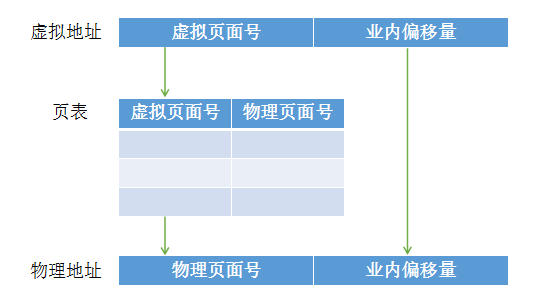
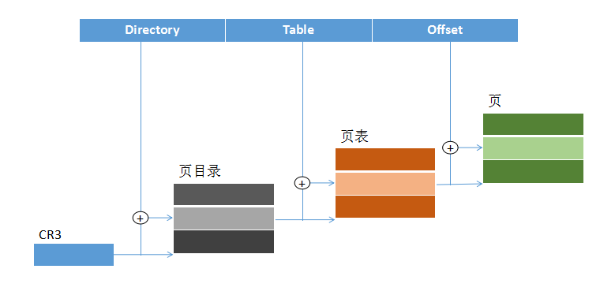
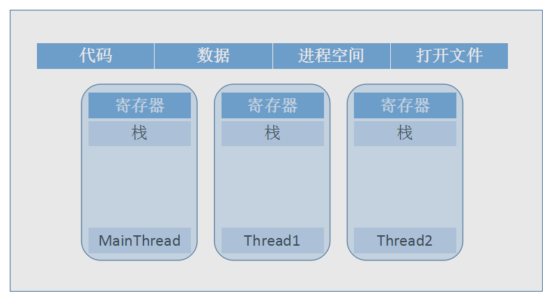

1.温故而知新
计算机科学领域的任何一个问题都可以通过增加一个间接的中间层来解决Any Problem in Computer science can be solved by another layer of indirection.
分段与分页
分段与分页
最初始的内存分配方案（直接线性的分配物理内存）主要存在地址空间不隔离、内存使用效率低、程序的运行地址不确定三大问题，提出的‘中间层’解决方案就是虚拟地址
分段：
将用户程序地址空间划分为若干大小不等的段，每个段可以定义一组相对完整的逻辑信息。存储分配时，以段为单位，段与段在内存中可以不相邻，即离散分配
分页：
为了提高内存使用率，利用程序的局部性原理，把地址空间认为的划分为固定大小的页，对应的，物理内存也划分为与页大小相等的许多物理块。这个页、块对用户是透明的，看不见的。
页错误，是当虚拟内存的页找不到对应的物理内存块时产生的异常。
物理地址、逻辑地址、虚拟地址
物理地址：内存芯片级的单元寻址，由硬件电路控制其具体含义，用来访问物理内存
逻辑地址：程序在执行指令，访问数据的时候通过逻辑地址（相对地址）进行访问操作
虚拟地址：又称线性地址，是逻辑地址与物理地址转换的中间层。用来访问虚拟内存空间
虚拟地址=程序基地址＋逻辑地址（相对地址）

随着物理内存的不断增加，单纯的再使用一个页表的话会使页面更加庞大，维护难度上升，查找难度增加，Linux中已经使用了4级页表。

CR3寄存器中保存着进程的PGD地址（Page Global Directory），每个进程都有自己的页目录地址，进程切换的时候由操作系统负责将页目录地址装入到CR3中，之后的地址翻译过程由MMU（Memory Management Unit）硬件完成
众人拾柴火焰高
进程： 操作系统进行调度与资源分配的基本单元
线程： 轻量级进程，CPU进行调度和分派的基本单位，基本上不拥有资源，共享一个进程的所有资源
协程： 轻量级线程，协程的调度由用户控制，所以可以看做是原子操作。Python使用yield关键字的生成器函数就是一种协程的应用

| 线程私有 | 线程之间共享（进程所有） |
|---|---|
| ● 局部变量 ● 函数的参数 ● 线程局部存储TLS数据（Thread Local Storage） |
● 全局变量 ● 堆上的数据 ● 函数里的静态变量 ● 程序代码 ● 打开的文件 |
2.
Comments